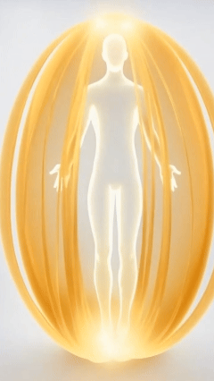

(1) 先进行 1~2 小时 "电脑屏幕" 面对面 深度访谈：
了解你希望解开的困扰、心结、与疑惑
(2) 展开 1~2 小时 催眠 引导：进入潜意识状态，
连接内在智慧，探寻问题根源与答案
(3) 回顾 & 总结：整合收获，清晰后续方向
全程线上视频进行 (Zoom/ 腾讯会议)，无需线下奔波，
在熟悉的家中房间里，享受专属于你的定制身心灵疗愈。

催眠冥想是 "放松 + 高度专注" 的特殊意识状态（不是睡着），你全程保持意识与自主控制，
被动跟随引导，更容易进入深层放松、触达深层潜意识。
被催眠者在极度放松下，说话音量会变得极低，请一定、千万、务必让麦克风摆在嘴巴附近。
镜头必须清楚看见你的 全脸 及 双手。

在日常生活中，左脑担任着 理性逻辑 & 质疑批评 的角色，并会随着 情绪起伏 而一直 波动不定；
而右脑所蕴含的 纯真直觉，一直被左脑的 过度理性 所压制。
久而久之，你渐渐忽略了右脑的声音，也遗失了内在的本真感知。

催眠的目的，正是引导你的左脑慢慢安静下来，卸下过度的分析防御，让右脑的智慧浮出表面，
让你重新连接内在的力量（潜意识）、认识真正的、多维度的自己。
Nikola Tesla 说，宇宙的一切都是 能量、频率、震动。

你的脑波、你的意图，都是能量频率信号；
你潜意识里的每一个念头，都会被身体的每一个细胞默默聆听、如实回应。


小孩不想上学时，跟妈妈说发烧头疼了，他的体温就真的高起来了。
医生开维他命给你，你以为是药，结果你的病好起来了。


你的身体是一个宇宙，而你，就是这个宇宙的神。
你身体的每一个细胞都深爱着你，无条件地对你唯命是从。
有一位妻子，与丈夫早已形同陌路。
当她确诊癌症后，在心理咨询中发现了一个真相 — 她的潜意识里，其实不愿这个病症消失。
因为只有在生病后，丈夫才会放下隔阂，送她去看医生、说上寥寥数语，
这个久违的互动，成了她潜意识里不愿放手的"温暖"。

而这份 "潜意识" 的想法，与她的 "意识" 完全相悖。
当被点破时，她的意识瞬间崩溃，
疯狂破口大骂："神经病啊！哪有人会不想康复的！！！！"
你知道 你潜意识里 真正的想法吗？

(1) 先进行 1~2 小时 "电脑屏幕" 面对面 深度访谈：
了解你希望解开的困扰、心结、与疑惑
(2) 展开 1~2 小时 催眠 引导：进入潜意识状态，
连接内在智慧，探寻问题根源与答案
(3) 回顾 & 总结：整合收获，清晰后续方向
用心看着下方的图像，停留一分钟，想象自己在这间老屋里，
静静感受内心泛起的情绪，试着描述你在图像中观察到的、以及你的直觉感受。
然后才往下划，看看你属于下述三种个案中的哪一种。
(source: Candace Craw-Goldman website)

个案 1：
这是一个老旧的房子。
里面有一个炉灶、几件家具，
桌子上摆着一些餐具。
催眠师：就这些吗？
个案 1：嗯~~ 地上还有一把翻倒的椅子。
我想应该就这些了。
哦！等一下，门外还有一个水车轮子。
个案 2：
我在一间老屋里。
地上是夯土地面，天花板上有木梁。
炉灶里生着火，我觉得锅里是海带炖排骨。
屋里有简单的家具，桌上有碗筷水杯。
地上有一把翻倒的椅子，看起来像是有人匆忙离开时弄翻的。
门外有一个木制的水车轮。
催眠师：你还注意到别的什么吗？还能再多描述一些吗？
个案 2：尽管屋内炉火熊熊燃烧，但不知为何，心底掠过一丝苍凉感。
或许是因为那把翻倒的椅子。。。。。
这里除了我，没有别人，我觉得有点孤单。
个案 3：
我在爷爷以前那间乡下房子里。
现在是冬天，我坐了很久的车，刚到这里。
爷爷做了土豆炖五花肉，太香了！
我们准备摆桌子吃晚饭，就听到那头牛痛苦的叫声。
爷爷急着去查看，匆忙间把椅子都碰翻了。
催眠师：那头牛在哪里？
个案 3：哦，它就在房子旁边那个牛棚里。
它应该是要生小牛了。
我其实还记得那头牛，它叫来福。
我真的很想念乡下生活，也特别想念爷爷。
个案3 也可能说：

此6分钟音频，带你闭上眼睛进行呼吸减压。
参考动图作为观想锚点，协助进入冥想与放松状态。
音频搭载左右双耳节拍频率，务必全程佩戴耳机聆听。
使用 Hi-Fi 高清音质、无降噪的耳机，
可感知完整波频，效果更佳。
就像健身房教练与客户的关系：客户必须“愿意”按照教练指引、主动完成训练。
教练要求做10下俯卧撑，客户就要认真投入、确实执行。
如果自身不愿行动，就算教练再专业，也无法帮你达成健身目标。

同理，催眠师在引导个案时，也需要个案充分配合、全心信任、彻底放松。
只有当个案“愿意”让自己的理性左脑安静下来，才能让意识转为 θ (希塔) 脑波状态，潜意识才能显现出来。
注：θ (希塔) 脑波状态，每天都会自然发生两次，
(1) 临睡前：全身放松、即将入睡时的意识状态，此刻你仍醒着，但左脑已沉静下来；
(2) 刚醒时：刚从睡眠边缘醒来时，感觉身体还很重、未能快速动弹；此时左脑仍一片空白、尚未启动批判功能。
有些人听过、读过量子催眠案例中的神奇经历，便对自己的催眠体验充满期盼，
如同孩子攀上墙头，眼巴巴盼着新鲜有趣的事发生。
请勿过度期待，否则左脑持续亢奋活跃，难以真正静下心来。

让你的批判左脑坐下、静静躺着，听听你的潜意识说什么。

列清单： 回想人生中所有渴望得到解答的事情，将其一一写下，我们会在面谈时讨论你这份清单。
环境：
人民币 2,222
台币 9,878
港币 2,566
美金 329
付款后即可预约具体日期
(来源: YouTube 简单易懂的双缝干涉实验 )
结论炸裂，多的是 你不知道的事